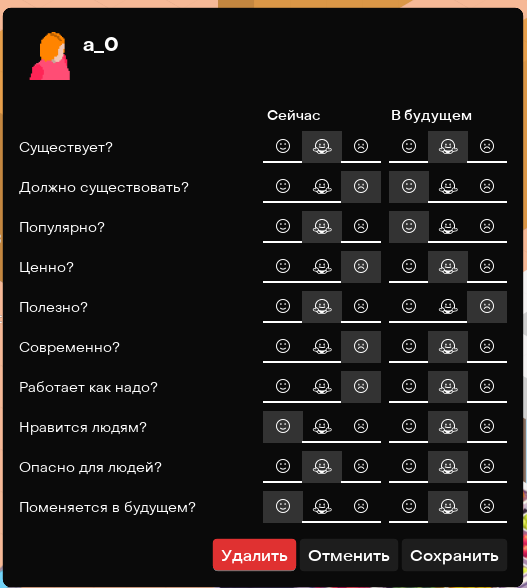

дискурс
v 0.16
виды мнений
Объектом мнения может выступать параметр, человек, действие, предмет мебели или социальная система. Про любой из этих объектов может быть любое мнение.
Про типы мнения есть оч старая модалка, которая больше нигде не используется:
|  |
На ней видно, что мнения бывают true либо false (кнопка посередине означает отсутствие мнения по теме), и могут быть 20 типов:
Причем первые 10 мнений отвечают за настоящий момент, а вторые 10 мнений за будущее время. |
точки входа в дискурс
Определенные Edith при выполнении проверяют мнения человека и определяют исход в зависимости от мнения.
| Объект | Триггеры | Описание |
PurchaseNeed
|
||
|
Мебель
Действия |
|
(Шаг 1) Проверка на предметы мебели и действия для удовлетворения потребности. Если нашлось что-то непроходное, то действие (само или по связанным с ним предметам) удаляется из возможных способов удовлетворения потребности. Если действий после такой проходки не останется, то человек кинет алерт. |
| Системы |
|
(Шаг 4) Проверка на систему, где мы нашли нужные покупки: знаем ли мы про эти места и считаем ли мы их опасными/недостойными внимания. Если система оказалась нелюбимой, то действие на этом заканчивается с исходом false_id + человек кидает алерт. |